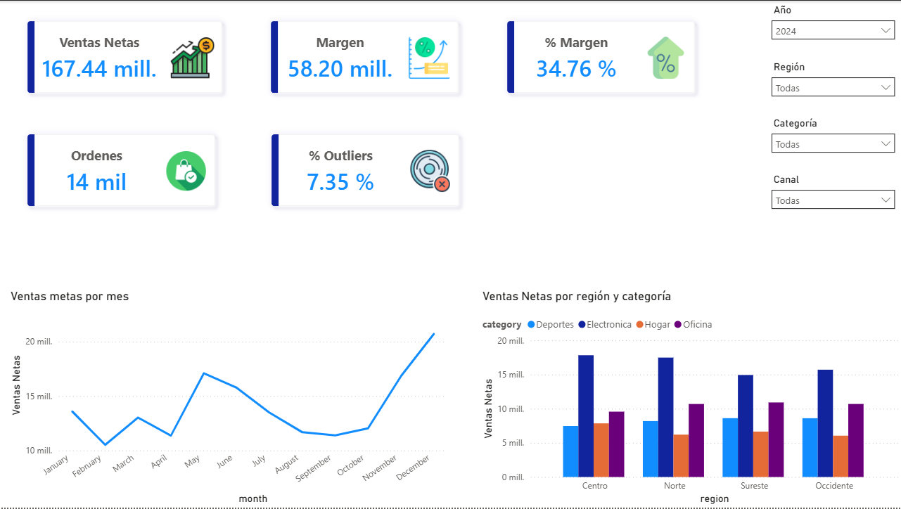
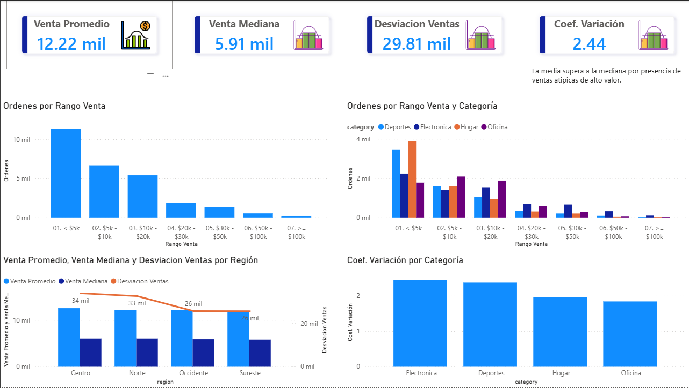

Python · Estadistica · Power BI
Analisis estadistico de ventas y outliers
Proyecto de Business Intelligence con enfoque estadistico. Se genero un dataset sintetico de ventas con Python y se calcularon metricas como media, mediana, desviacion estandar, coeficiente de variacion, z-score, limites IQR, outliers y correlaciones para construir un dashboard analitico en Power BI.
Objetivo
Usar estadistica para explicar el comportamiento de ventas
El objetivo fue construir un reporte que no solo muestre ventas, sino que ayude a identificar dispersion, ventas atipicas, categorias con mayor variabilidad y relaciones entre descuento, unidades, margen, entregas, satisfaccion y devoluciones.
Pipeline
Trabajo realizado con Python
El proyecto usa un script reproducible para generar datos y preparar salidas listas para Power BI. El dataset fue creado con patrones intencionales: estacionalidad, descuentos que elevan unidades, entregas tardias que reducen satisfaccion y una pequena proporcion de pedidos especiales de alto valor.
- Generacion de datos: ventas 2024-2025, productos, tiendas, clientes y calendario.
- Senales estadisticas: ventas sesgadas a la derecha, dispersion por categoria y pedidos extremos.
- Outliers: calculo de z-score y regla IQR para marcar ventas atipicas.
- Resumenes: media, mediana, desviacion estandar, percentiles, IQR y coeficiente de variacion.
- Correlaciones: matriz entre ventas, unidades, descuento, entrega, satisfaccion y margen.
- Localizacion: CSVs normales y version es-MX con `;` y coma decimal para Power BI.
Capturas
Paginas del reporte


Modelo
Tablas y relaciones
El modelo principal se construyo como estrella alrededor de `FactSales`. Las tablas estadisticas se dejaron como auxiliares para paginas especificas, evitando relaciones innecesarias o ambiguas.
- FactSales: ventas con variables operativas y flags estadisticos.
- DimDate: calendario 2024-2025.
- DimStore: tiendas, ciudades y regiones.
- DimProduct: productos, categorias, costo y precio.
- DimCustomer: clientes, segmento y antiguedad.
- StatCorrelationMatrix: correlaciones precalculadas.
- StatSummaryRegionCategory: resumen estadistico por region y categoria.
Estadistica
Conceptos aplicados
Z-score =
(venta - media) / desviacion_estandar
Outlier por z-score:
ABS(z) >= 3IQR =
Q3 - Q1
Limite inferior = Q1 - 1.5 * IQR
Limite superior = Q3 + 1.5 * IQRCoeficiente de variacion =
desviacion_estandar / media
Sirve para comparar dispersion relativa.Correlacion de Pearson =
relacion lineal entre dos variables numericas.DAX
Medidas principales
Venta Promedio =
AVERAGE ( FactSales[net_sales] )Venta Mediana =
MEDIAN ( FactSales[net_sales] )Desviacion Ventas =
STDEV.P ( FactSales[net_sales] )Coeficiente Variacion =
DIVIDE ( [Desviacion Ventas], [Venta Promedio] )Outliers =
CALCULATE (
DISTINCTCOUNT ( FactSales[sale_id] ),
FactSales[outlier_type] <> "Normal"
)% Outliers =
DIVIDE ( [Outliers], [Ordenes] )Analisis
Preguntas que responde
- Que tan diferente es la media respecto a la mediana?
- Que categorias concentran mas ventas atipicas?
- Que regiones tienen mayor variabilidad relativa?
- Que pedidos estan fuera del comportamiento normal?
- Los descuentos se asocian con mas unidades vendidas?
- Los dias de entrega afectan la satisfaccion del cliente?
Aprendizajes
Decisiones tecnicas
- La media y la mediana cuentan historias distintas cuando la distribucion esta sesgada.
- El metodo IQR detecta bien valores extremos en distribuciones con cola larga.
- El z-score ayuda a medir que tan lejos esta una venta respecto al comportamiento promedio.
- Las tablas estadisticas auxiliares pueden permanecer desconectadas para evitar ambiguedad en el modelo.
- La version es-MX de los CSV evita errores de interpretacion decimal en Power BI.
Estado
Proyecto en construccion para portafolio.
Las capturas finales se agregaran cuando terminen las paginas de distribucion, outliers, correlaciones y operaciones.